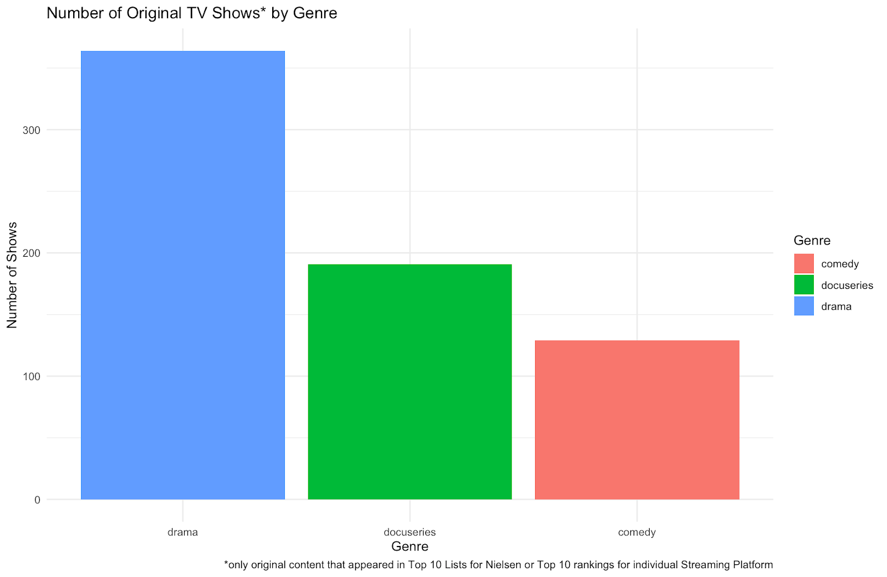
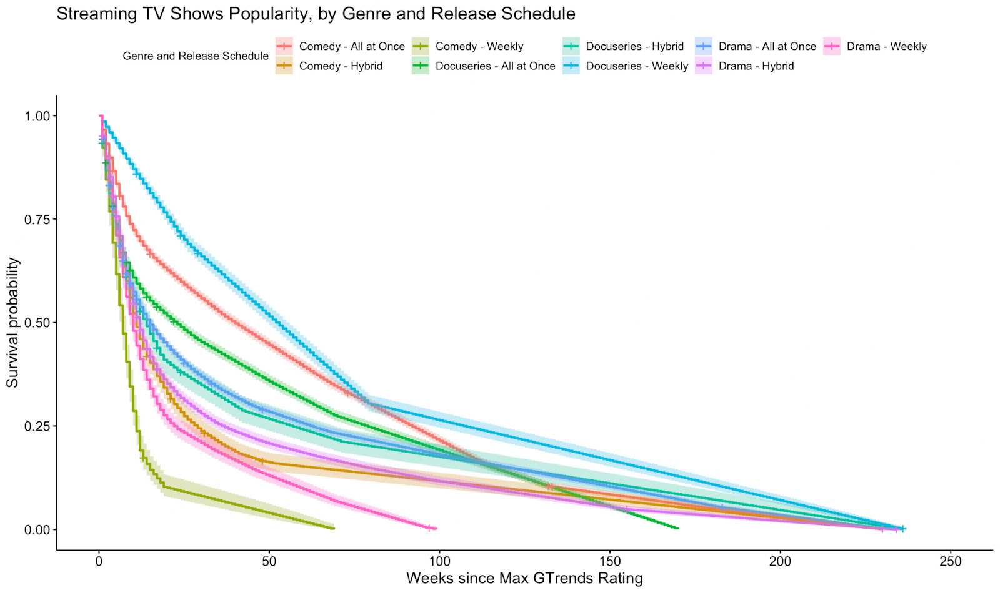
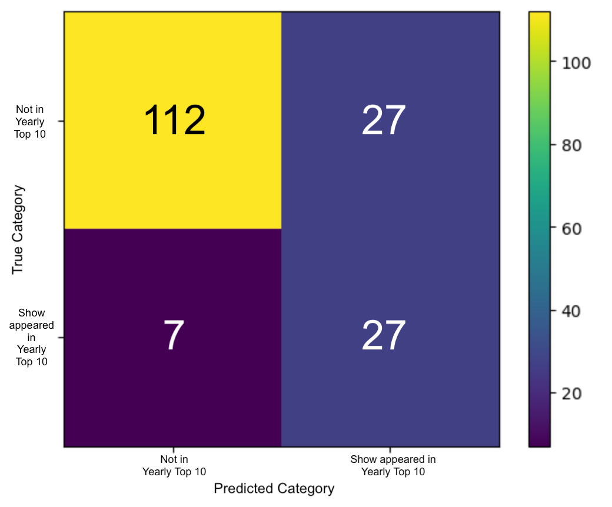

Introduction
Binge-watching has been around since the late 1990s, but started to gain popularity in the mid- to late 2000s with the availability (and accessibility) of TV shows like Grey’s Anatomy and Breaking Bad on streaming platforms like Netflix, Hulu, and Amazon Prime Video (Molla & Kafka, 2020; Thomas & Gennis, 2021). However, it really took off in 2013 when Netflix began releasing original content, starting with House of Cards and followed later that year by Orange is the New Black. Netflix started the practice of releasing all episodes of a season at once, a sharp departure from the standard weekly episodes (Rumble, 2018). They continue to release most of their content this way, with a few exceptions (Love is Blind and season 3 of Bridgerton, notably). This strategic shift by Netflix not only redefined viewer expectations but also set a precedent that other streaming platforms would soon follow. The public seemed to love it because they could watch at their own pace and didn’t have to wait a week after a mid-season cliff-hanger (McFarland, 2024).
Shows like Succession (2018 - 2023), The Last of Us (2023 - present), and The White Lotus (2021 - present), all of which aired weekly on HBO at the same time they were released on HBO Max (later Max), created intense online discourse and reignited appointment television for an hour each Sunday. This provided not only a way for viewers to connect with each other, but also built momentum and caused the shows to stay in the public discourse for as many weeks as they aired (Sutton, 2023).
As more streaming platforms came onto the market, so did more methods of releasing original content. While some shows are still released all at once (the “binge model”), many are released weekly, with some providing two or three episodes to start before transitioning to one episode a week. Some shows will also be released in batches of two episodes every week (Press, 2021). For example, all 3 seasons of The Bear on Hulu have been released all at once, while season 1 of Shogun premiered with the first two episodes at once and then weekly.
With the rise of social media, platforms like Twitter became an important place to discuss TV shows with fellow viewers and get recommendations, later followed by TikTok. This project will seek to answer the question “Does the release schedule of a show (weekly, in parts, or all at once) impact their staying power?” Of particular interest is how shows perform on weekly Nielsen charts - both overall and by streaming platform - and their interest over time on Google Trends.
Methods
In order to answer our question of interest, we had to gather a large amount of data from a wide number of various sources and databases. Unless mentioned otherwise, all of the data that was collected was data specifically about the US. Google Trends data and the ratings data all reflect the United States ratings and values; we decided to exclude worldwide ratings as we are most interested in the US Market.
Google Trends
Google Trends data was collected for each show, movie, or special that appeared on the ratings lists we compiled. This data spans the last five years for each title, irrespective of its original premiere date, to maintain consistency across our dataset. The data was downloaded from the Google Trends website in CSV format, with two columns: Date and Rating. Due to the lack of an API, this process required manual effort, but it ensured precise tracking of interest over time. The ratings are presented on a normalized scale, where 100 represents the peak search interest for the term, and 0 indicates insufficient search volume to meet the reporting threshold.
One challenge was associating the ratings with their respective shows, as the show’s title was not included in the CSV file. We addressed this by naming each CSV file after the show or movie, then adding a column with the file name to match the ratings with the show titles.
To manage the large number of CSV files, we organized them into folders based on the streaming platforms. For example, the ‘Netflix’ folder contained the Google Trends CSVs for shows like Stranger Things, Bridgerton, and The Crown. We then created an R function to loop through the folders, ingest all the data, append the show’s name to the dataset as a new column, and combine all rows into a single CSV file. This approach consolidated the data into one comprehensive file, streamlining further analysis.
Nielsen Weekly Streaming Ratings
Nielsen Weekly Streaming Ratings data was collected from September 2020 onwards, which is as far back as this data is available (see current week here). Since Nielsen’s website only provides the most recent release without an archive, we sourced the data from Variety articles (example) and TV Grim Reaper’s Twitter/X posts (example). We focused specifically on the Top 10 data for Original Content, as our primary interest lies in understanding how a streaming show’s release schedule influences its popularity. Consequently, data on acquired shows, which were originally released through other means (such as on a broadcast TV channel), were not included in our analysis.
The primary challenge in processing the Nielsen data was its format. We were unable to find a downloadable CSV for the Nielsen data without incurring costs, so we resorted to taking screenshots of the weekly top 10 lists. Each screenshot contained the following details: the week of the the ratings, show rank (1-10), the show’s name, its SVOD Provider (streaming platform), the total number of episodes, and the number of minutes the program was watched in the past week.
With over 190 screenshots to process, we needed an efficient and accurate data extraction solution. Amazon Textract proved to be the most effective tool, allowing us to convert each processed image into ZIP files containing CSVs. We then used R to unzip the folders, clean the data, and merge the files into a single CSV file. This consolidated file includes all the weekly Nielsen data collected, with an additional column for the date of the rankings to maintain chronological order of the data.
TV Grim Reaper Weekly Streaming Ratings
In addition to Nielsen’s overall ratings, which encompass all major streaming platforms, Nielsen also releases weekly top 10 ratings for each streaming platform. We sourced these Nielsen top 10 lists for individual streaming platforms from the TV Grim Reaper on Twitter/X (example). The account, run by Bill Gorman, co-founder of TV by the Numbers, obtains these lists from a source at a company that subscribes to Nielsen. The TV Grim Reaper posted screenshots of these rankings from June 2023 to April 2024, providing roughly one year’s worth of data.
We gathered ratings for the following platforms: Amazon Prime Video, Apple TV+, Disney+ and Hulu. We did not collect data for Netflix (see next section), and we did not include Peacock or Paramount+ as their top 10 data was not captured by the TV Grim Reaper and we could not find alternative sources for this data.
As with the Nielsen weekly ratings, screenshots of each tweet were processed using the Amazon Textract API from AWS. R was then used to unzip the folders, clean the data, and merge the files for each platform.
Although the TV Grim Reaper data was not used in the final analysis, it played a crucial role in shaping our understanding of streaming-platform specific trends. Several shows in our dataset appeared on these rankings, and the initial inclusion of the data provided valuable context for cross-referencing with other sources. Therefore, it was important to acknowledge this source, as it influenced which shows were considered for our study.
Netflix Weekly Top 10 Streaming Ratings
We did not gather Netflix Top 10 data from the TV Grim Reaper because Netflix is the only streaming platform that offers a CSV download of its weekly top 10 history directly (link). This dataset covers a longer period, going from August 2021 to the present day, and includes detailed information that significantly enhanced the robustness of our analysis. The CSV format includes key variables such as date, ranking, and show name, which were crucial for our study.
Netflix’s top 10 ratings includes ratings for each individual country where Netflix is available. For our analysis, we filtered the dataset to include only the ratings for the United States. Additionally, since the dataset includes both top 10 ratings for movies and television shows, we filtered out any movies to focus solely on television shows.
FlixPatrol Yearly Streaming Ratings
FlixPatrol is a movie and TV ratings compiler that provides an API to retrieve ratings lists with options to filter by show type, streaming platform, country, year, and more. We collected yearly ratings for the eight main streaming platforms analyzed in our study (Amazon Prime, Apple TV+, Disney+, HBO Max, Hulu, Netflix, Paramount+, and Peacock) for the years of 2021-2024, which overlaps with our weekly streaming ratings data. These ratings reflect the total number of minutes watched over the year.
The API’s ability to specify columns (show, platform, rating, and date) and provide CSV downloads made data extraction straightforward. However, we encountered a challenge with obtaining top 10 data for original programming only. Although the API allows filtering by creator, not all streaming platforms could be filtered. To address this, we got the overall top 10 lists for the platforms without specific filters (Peacock and Paramount+), and manually identified original programming by reviewing the lists until we reached ten original shows per year.
Show Release Information
One of the main components of our project is the release schedule of individual shows. To obtain this information, we compiled a list of shows from our dataset and used Wikipedia articles for each platform (example) to determine the number of seasons and their release schedules.
We binned (categorized) the release schedules into three types: all at once, hybrid, and weekly. “All at once” refers to shows where the entire season is released simultaneously, “weekly” indicates episodes are released one per week, and “hybrid” describes a combination of both methods. For example, the first season of Ted Lasso was released with the first three episodes all at once, followed by weekly releases.
To accurately classify shows like Bridgerton, which changed their release schedules over time, we categorized each season individually. For instance, seasons 1 and 2 of Bridgerton were released all at once, whereas season 3 was released in two four-episode batches. As such, it would be misleading to classify Bridgerton as either a strictly ‘all at once’ or strictly ’hybrid‘ release schedule. This approach ensures precise classification despite variations in release schedules.
While Wikipedia’s accuracy could be questioned, it was the most comprehensive and accessible source available for detailed episode release information all on one page, facilitating quicker data collection. Additionally, Wikipedia’s active editorial community helps maintain accuracy, especially on heavily trafficked articles (such as popular TV shows). After evaluating the potential risks, we decided to proceed with Wikipedia as a source of reliable information for our needs.
We also identified whether each show was original content for the streaming platform or acquired from a third-party source. For instance, Young Sheldon is available on Netflix but was created by and originally aired on CBS. Thus, CBS is the third-party source for Young Sheldon. As our focus was on the release schedules of streaming shows, we excluded acquired content from our analysis.
Show Genre and Language Information
Another important variable in our analysis is the genre of a show and its potential impact on popularity. To gather this information, we again relied on Wikipedia, which provides detailed genre classifications. However, genres listed on Wikipedia can be extremely specific. For example, the Amazon Prime Video show Gen V is categorized as a ’superhero teen drama‘, a genre unique to that show in our dataset. Thus, using the exact genres as listed would not be sufficient for our analysis. We decided to simplify the genre classifications by binning them into broader categories.
We binned shows into three main genres: drama, comedy, and docuseries. Any show with a genre included the word comedy, drama, or docuseries was placed into the corresponding category. For the remaining genres, we classified them based on how they best fit into these bins:
- Docuseries: Includes any genre related to non-fiction or real-world events, such as true crime documentaries, reality competition shows, and game shows.
- Drama: Encompasses genres typically associated with dramatic content, such as horror, thriller, and telenovela.
- Comedy: Covers genres that are generally lighthearted, including sitcoms, children’s shows, and mockumentaries.
An important caveat is that each show was classified into one of the three genre categories with one exception. Shows listed with both Comedy and Drama genres, such as The Bear (a ’comedy drama‘), were classified into both categories. To avoid duplication in our database, we separated the binned genres into a different table, ensuring each show appears only once in the main shows table.
We also gathered language information for each show. Although we collected ratings specifically for the US, the dataset does includes shows with dialogue primarily in a foreign language. To address this, we collected language data from Wikipedia alongside the genre information.
Data Ethics
Our study focuses on shows included in the top 10 lists by Nielsen and Netflix, providing insight into the most popular content rather than a comprehensive view of the entire streaming landscape. This approach acknowledges that the rankings may fluctuate based on the release of highly anticipated shows, which could overshadow other content that might otherwise gain attention in a different week.
We also recognize that subscription services come with inherent biases, as the audience demographic varies by platform, influenced by cost and accessibility. Streaming services, ranging from $5.99 (ad-supported Paramount+ or Peacock) to $15.99 (ad-free HBO Max) per month (Moses, 2023), are not universally accessible, potentially skewing our findings towards a more affluent or tech-savvy audience.
In considering the ethical dimensions of our research, we must consider the potential implications of our findings on the streaming industry. If our study concludes that the all-at-once release model generates more sustained buzz, this could influence platforms to favor this approach, potentially exacerbating binge-watching behavior. While convenient, binge-watching raises concerns about mental and physical health, such as increased screen time, sleep disruption, and the potential for addictive consumption patterns (Medicine, 2024).
Furthermore, if streaming platforms were to prioritize all-at-once releases based on our findings, it could lead to unequal opportunities for content creators. Smaller or less mainstream shows might struggle to compete in a landscape where immediate, large-scale engagement becomes the standard measure of success.
Data
We decided to store our data in third normal form (3NF), and as such, assigned unique ID numbers to each show and streaming platform in the ratings. The most time consuming and tedious part of the project was in getting all of the show titles in a consistent format so that we could assign them all IDs. Many shows were listed in multiple different ways in the various ratings; for example, the Netflix show Formula 1: Drive to Survive was in the datasets as ‘Formula 1: Drive to Survive’, ‘FORMULA 1: DRIVE SURVIVE’, and ‘Formula One: Drive…’. This was true for many of the shows in the various datasets, so in order to ensure consistency for joining purposes, we went through the datasets and set each show name to a consistent format. This ended up being a pretty considerable effort, taking a few days’ worth of work to complete. But once we were finished, we were able to easily and consistently join our datasets together and change the show names to show ids.
The way that we structured our database tables is shown in the Entity Relationship Diagram of Figure 1.
We use the show_id as our main connecting piece, allowing us to connect our shows table with the various ratings tables, the gtrends table (containing Google Trends data), and the releaseinfo and binned_genres tables.
Instead of having unique Primary Keys for each table, we primarily use compound keys as unique identifiers for each of our tables. Only the shows and platforms tables have single value primary keys. Every other table has a compound primary key. The compound keys were chosen to have a unique identifier that we could use to identify each row. For example, the netflixtop10 table’s compound key consists of the show_id, date, and season_title. This is because Netflix’s Top 10 data breaks down a show by season, so a single show could appear on the same week’s top 10 list multiple times. An example of this is Bridgerton. The Netflix Top 10 list for the week of June 6, 2024 contains Bridgerton Season 3, Bridgerton Season 2, and Bridgerton Season 1. As such, a compound key of just the show_id and date would not create a unique compound key. Therefore, season_title was also included to differentiate between the different seasons of a show.
The season_number was included in the compound key of the releaseinfo table for similar reasons; as the release schedule for a show can change over the lifetime of the show, we needed to include the season_number to the compound key alongside the show_id to ensure that each row had a unique identifier.
Most of the other tables such as gtrends, reaperratings, yearlyratings, and nielsenratings use a compound key of just the date and show_id as they do not differentiate between seasons, and therefore each show would have at maximum one data point per week, making our compound keys unique for these tables.
The binned_genres table required including both the show_id and the binned_genre as part of the compound key. This is due to the fact that, as mentioned in the Show Genre section, there are a small number of shows whose genre listed both ‘comedy’ and ‘drama’, and as such, we classified them as both. Therefore, within the binned_genres table, there are a few show_ids that are repeated, so we must additionally include the binned_genre column in our compound key to ensure that each row is unique.
Figure 1: ERD of Database Design and Structure
{kind=link}
| Column Name | Description | Data Type | Example |
|---|---|---|---|
id |
Unique identifier for the TV show | Integer | 28 |
name |
Name of the show | Text | JuryDuty |
platform_id |
Unique identifier for the streaming platform | Integer | 1 |
tv_or_movie |
Whether the content was a TV show or movie | Text | TV |
genre |
Genre of the show | Text | Mockumentary |
miniseries |
Whether it was a miniseries or not | Text | N |
foreign_language |
Whether it was in a foreign language or not | Text | N |
original_content |
Whether it was original content or not | Boolean | Y |
notes |
Any notes | Text | Freevee |
| Column Name | Description | Data Type | Example |
|---|---|---|---|
show_id |
Unique identifier for the TV show | Integer | 28 |
date |
Date of the pulled Google Trends number | Date | 2023-05-07 |
rating |
Google Trends rating (0-100) | Integer | 73 |
| Column Name | Description | Data Type | Example |
|---|---|---|---|
date |
Date of the rating | Date | 2021-09-26 |
show_id |
Unique identifier for the TV show | Integer | 108 |
rank |
Rank for that week (1-10) | Text | 5 |
episode_count |
Number of episodes at the time of the rating | Integer | 20 |
minutes_watched |
Total minutes viewed by persons 2+ | Text | 311000000 |
platform_id |
Unique identifier for the streaming platform | Integer | 2 |
| Column Name | Description | Data Type | Example |
|---|---|---|---|
date |
Date of the rating | Date | 2023-11-19 |
show_id |
Unique identifier for the TV show | Integer | 108 |
rank |
Rank for that week (1-10) | Text | 4 |
platform_id |
Unique identifier for the streaming platform | Integer | 2 |
runtime |
Runtime of the show at the time of the rating | Integer | 1471 |
episode_count |
Number of episodes at the time of the rating | Integer | 34 |
minutes_watched |
Total minutes viewed by persons 2+ | Text | 150000000 |
| Column Name | Description | Data Type | Example |
|---|---|---|---|
year |
Year of the rating | Integer | 2022 |
show_id |
Unique identifier for the TV show | Integer | 108 |
rank |
Rank for that week (1-10) | Integer | 1 |
platform_id |
Unique identifier for the streaming platform | Integer | 2 |
rating_value_score |
Score calculated based on daily position in chart | Integer | 307 |
| Column Name | Description | Data Type | Example |
|---|---|---|---|
show_id |
Unique identifier for the TV show | Integer | 567 |
date |
Date of the rating | Integer | 2021-07-18 |
rank |
Rank for that week (1-10) | Integer | 3 |
weeks_in_top10 |
Weeks the title has been in top 10 | Integer | 1 |
season_title |
Name of the season | Text | Never Have I Ever: Season 2 |
| Column Name | Description | Data Type | Example |
|---|---|---|---|
show_id |
Unique identifier for the TV show | Integer | 28 |
release_schedule |
Release schedule of the show | Text | first four episodes at once, then batches |
season_number |
Season of the show | Integer | 1 |
binned_release |
Binned release schedule | Text | hybrid |
| Column Name | Description | Data Type | Example |
|---|---|---|---|
show_id |
Unique identifier for the TV show | Integer | 567 |
binned_genre |
Binned genre | Text | comedy |
| Column Name | Description | Data Type | Example |
|---|---|---|---|
id |
Unique identifier for the streaming platform | Integer | 1 |
platform_name |
Name of the streaming platform | Text | Amazon Prime |
Analysis
Our analysis includes exploratory data analysis, a case study, survival analysis, and a machine learning model.
Exploratory Data Analysis
After gathering all of the data listed above, we ended up with a dataset comprising 684 TV shows that are original content on streaming platforms. The breakdown of the shows by streaming platform is shown in Figure 2.
The dataset reveals a notable dominance of Netflix, which has significantly more shows than any other platform - in fact, more than all other platforms combined. This discrepancy can be attributed to two main factors. First, Netflix’s weekly top 10 data spans 3.5 years, compared to approximately 0.75 years for the other platforms. This additional 2+ years worth of data contributes to the larger number of Netflix shows. Second, Netflix’s status as the most popular streaming platform enables it to produce more original content due to greater funding and resources. DigitalTrends reports that Netflix has 270 million monthly subscribers, whereas Hulu, Max, Paramount+, and Apple TV+ all have under 100 million subscribers (Nickinson, 2024). This substantial difference in revenue allows Netflix to invest more in original content and achieve higher Nielsen ratings. Additionally, Netflix’s longer history as the oldest streaming platform, having been launched in 2007 (Barnes, 2019), has afforded it more time to develop a vast library original content.
This prominence of Netflix in our dataset will likely influence the results, potentially skewing them in favor of what is most successful for Netflix. This is something that we need to be aware of during our analysis.
 Figure 2: Netflix dominates the dataset with the most total shows
Figure 2: Netflix dominates the dataset with the most total shows
The breakdown of shows by binned genre is as follows (Figure 3).
The distribution of shows by genre apears relatively straightforward and aligns with expectations. Initially, we were surprised by the lower number of comedy shows compared to drama and docuseries. However, this can be attributed to our data collection method, which focused solely on shows featured in the top 10 rankings. Since critically acclaimed TV shows are often dramas, this difference in genre counts makes sense.
Understanding the genre distribution is essential as it may reveal genre-specific trends in how release schedules impact viewer engagement. We categorized the shows by genre because we anticipate that every release schedule will not be appropriate for every type of show. As such, we expect to see a change in the popularity of shows in given release genres depending on the show’s genre.
 Figure 3: Drama shows are the most common genre
{kind=link}
The breakdown of shows by their release schedule is shown in Figure 4.
As Figure 4 shows, Netflix is far and away the reason why ‘all at once’ shows dominate the dataset, having over 300 shows with that release schedule. The other streaming platforms have much more of an even distribution, but we will need to be cognizant of the Netflix domination during our analysis.
Figure 4: Netflix spearheads the all-at-once release type (the shows whose release schedule changed were classified as ‘Changed’ on this graphic)
{kind=link}
Case Study: Fallout vs. The Last of Us
We wanted to compare two similar shows with different release schedules: Prime Video’s Fallout and HBO’s The Last of Us. Both are post-apocalyptic dramas based on video game franchises.
Figure 5 and Figure 6 illustrate the Google Trends search interest and Nielsen top 10 streaming rankings for these shows. Fallout was released in full on Prime Video on April 10, 2024. Interest in Fallout peaked at its premiere but declined sharply within a week, droppping to half its peak popularity. The show’s interest continued to decline, though it exhibited occasional small peaks.
In contrast, interest in The Last of Us, which premireed on HBO (simulcast on HBO Max) on January 15, 2023, and concluded on March 12, jumped weekly as new episodes aired, maintaining high interest levels. The show’s interest did not dip below the halfway mark until nearly a week after the finale.
Fallout appeared on the Nielsen rankings for 7 weeks, spending 4 of those at #1 before dropping to #7. The Last of Us was ranked on Nielsen for 9 weeks, achieving the #1 spot for just one week, but never falling below #4.
Figure 5: Search interest (daily, based on Google Trends) for Fallout* and The Last of Us, starting one week before it was released and going until it fell off the Nielsen rankings*
{kind=link}
 Figure 6: Search interest (daily, based on Google Trends) and Nielsen ranking (weekly) for The Last of Us, starting one week before it premiered and going until four weeks after the finale. Nielsen ranking is just for HBO Max and does not include the television channel
Figure 6: Search interest (daily, based on Google Trends) and Nielsen ranking (weekly) for The Last of Us, starting one week before it premiered and going until four weeks after the finale. Nielsen ranking is just for HBO Max and does not include the television channel
Tests and Definitions
In the process of performing our analysis, we will be utilizing a wide range of different statistical models, tests, and techniques. To ensure clarity and understanding, we have provided these definitions below.
- Kaplan-Meier Curves
-
Kaplan-Meier curves graphically represent the survival probability of a particular variable over time. They display how long it takes for an event to happen; oftentimes, this event is a “death”, such as a part breaking or a show ending. They are read as follows: say a Kaplan-Meier curve shows that variable A has a 100% survival rate at time 0, and a 50% survival rate at time 1. That means that, between time 0 and time 1, 50% of the instances of variable A in the dataset did not survive to time 1.
-
If there is a vertical line present, that indicates censored data. Censored data indicates an observation that has yet to encounter “death”. In the example of a survival curve of how long it takes for a part to break, if a part was observed for one week and did not break, then it would be represented as a single vertical line at the one week mark, indicating that the observation was censored at that point, as observations ended. In our graphs, which demonstrate how long it took for a show to go from Maximum Google Trends rating of 100 to Minimum Google Trends rating of 0, censored data means that the show has hit its maximum rating but has yet to go back down to 0 rating (implying ongoing popularity).
- Chi-squared Tests
-
Chi-squared tests determine if the observed differences between two variables are statistically significant. The test calculates the chi-square statistic, which measures the discrepancy between the observed and expected frequencies. If the chi-square statistic is sufficiently large, the null hypothesis is rejected, indicating a significant association between the variables.
- Log Rank Tests
-
A log rank test is a statistical test to determine whether the survival rates of two or more groups are significantly different. The log-rank test compares the observed number of events (such as deaths or failures) in each group to the expected number of events.
- Ensemble Model
-
An ensemble model is a machine learning classification model that combines the predictions of multiple models to make a more accurate overall decision. It works via a voting majority: if a majority of the models determine that an observation belongs to a given category, then the ensemble model will predict that the observation is part of the category.
- Confusion Matrix
-
A confusion matrix is a graphical representation of a classification model’s success. It shows the number of true instances of a given category and the number of predicted instances of a given category as a way to represent a model’s accuracy.
Survival Analysis
To explore how factors like a show’s release schedule, genre, and streaming platform impact its staying power, we chose survival analysis as the most ideal method.
First and foremost, we needed to identify a way to calculate a show’s staying power. To do this, we decided to use Google Trends data. This was chosen over Nielsen Ratings to simply give us more data points; many shows appear only a single time in the top 10 ranking. On the flip side, using Google Trends data, we have a few hundred data points for every show. As such, we felt that this additional depth would allow for a more consistent proxy for overall popularity. As we have Google Trends data for each show going back over the last 5 years, we determined that using Google Trends to be a proxy for a show’s staying power would be ideal. As a reminder, Google Trends data is normalized on a scale from 0 to 100, with 100 being equal to the time during the past 5 years when the TV show was searched for most often. To calculate the show’s staying power, we decided to look at the number of weeks that it took for a given show to go from a Google Trends rating of 100 (the maximum possible rating) to a rating of 0 (the minimum possible rating). This number essentially determines how long a show ‘survived’ in the public sphere. The great Ernest Hemingway was quoted as saying “Every man has two deaths, when he is buried in the ground and the last time someone says his name” (Hemingway, n.d.). In our minds, every show has two deaths, when the last episode airs and the last time someone searches for its title on Google.
Streaming Platforms
We first decided to look at the show’s streaming platform, to see if that had any significant impact on the length of time of a show’s popularity (Figure 7).
As the Kaplan-Meier curve in Figure 7 shows, there is some difference between the streaming platforms. The two worst performing streaming platforms in terms of sustaining popularity are Peacock and Disney+. Peacock significantly lags behind other platforms, likely due to its relative unpopularity and recent entry into the market. Peacock is the newest of all the streaming platforms tested, launching in July of 2020 (Comcast, 2020). As such, it has not had the time to build up an audience or a reputation as a platform with good original programming. Disney+ is a more interesting example. Disney+ is a very popular streaming platform, but not very good at creating original content that sustains popularity. We hypothesize that this highlights the strengths of Disney+: the catalog of Disney content. Disney+ houses all sorts of Disney Channel shows, Star Wars films, and Marvel films, all of which could be argued are the main draw of Disney+ as a platform, not their original content.
To determine the statistical significance of the survival times by genre, we ran a log rank test. Running the log rank test gave us a p value of <2e-16. As such, we can say with confidence that a show’s streaming platform is a significant influence on how the show’s popularity is sustained over time.
 Figure 7: Not all streaming platforms sustain popularity equally; Disney+ and Peacock’s original programming dies in popularity after only 20 weeks, whereas Amazon Video and Netflix sustain their popularity past 200 weeks
Figure 7: Not all streaming platforms sustain popularity equally; Disney+ and Peacock’s original programming dies in popularity after only 20 weeks, whereas Amazon Video and Netflix sustain their popularity past 200 weeks
Genre
Next, we wanted to look at the genre of a show and how genres affected the shows’ staying power (Figure 8).
 Figure 8: Comedy shows sustain popularity at higher rates than drama or docuseries shows
Figure 8: Comedy shows sustain popularity at higher rates than drama or docuseries shows
This Kaplan Meier curve tells some interesting stories. First, comedy performs much better than drama and docuseries from around the 10 week to 120 week mark. Meanwhile, docuseries and drama have a nearly identical curve the entire time. This goes counter to what we expected to see, as we thought that drama series would perform better than comedy series, as drama series are often watched “actively” whereas many comedy series are often watched as “comfort watching”. After all, drama and comedy are the two major categories at the Emmy Awards, the premier awards show for TV programming (Emmys, n.d.). We also anticipated that these two genres would perform better than docuseries, and that there would be a larger difference in docuseries when compared with comedy or drama, due in part to how the shows are produced.
With a drama or comedy series (i.e. fictional shows), there must be a team of writers constantly working on writing new episodes and trying to keep things fresh and interesting while crafting an overall narrative arc. This is a very effort-intensive and time-consuming activity that is very hard to sustain over a long period of time. On the other hand, docuseries often can recycle the same ideas over and over again with new individuals. As a reminder, docuseries includes shows such as reality shows, game shows, and true crime docuseries. For example, one show in the docuseries category is the dating show Love is Blind. What is really different from one season to another other than the contestants? The format is the same, the show’s structure is the same, they just swap out the old contestants for new contestants. This difference makes sustaining a docuseries much easier than sustaining a drama or comedy show.
We ran a log rank test on our genre Kaplan-Meier curve as well, and this test resulted in a p value of <2e-16. As such, we can say that genre absolutely plays a significant role in the sustained popularity of a given show.
Show Release Schedule
Finally, after seeing how a show’s streaming platform and genre can affect their staying power, we decided to look into the survival probabilities of the different release schedules (Figure 9).
This graphic provides some interesting insights. First, hybrid release schedules perform by far the worst in the beginning stages. This is interesting, as the different streaming platforms treat this release type differently. On Apple TV+, the hybrid release is essentially the default release type at this point in time, whereas on Netflix, hybrid release schedules are reserved for the most high-performing and popular shows on the platform, such as Stranger Things and Bridgerton. This likely is the cause for the relative low performance of the hybrid release type.
The all-at-once and weekly release schedules are fairly similar, with just a small difference in the middle section from about week 50-125, where all-at-once release schedules perform better. Interestingly, there’s very little difference between the shows in its first few weeks. We anticipated seeing a larger difference between the weekly and all-at-once releases in the show’s infancy, but there are very few differences detected.
Running a log rank test on the release schedules gives a p value of <2e-16. As the release schedule, genre, and streaming platform are all statistically significant variables influencing popularity, we wanted to see how the combination of release schedule with these other factors influenced their survival probabilities.
 Figure 9: Hybrid releases are the worst performing of all release schedules, whereas all-at-once releases sustain their popularity at higher rates for longer
Figure 9: Hybrid releases are the worst performing of all release schedules, whereas all-at-once releases sustain their popularity at higher rates for longer
Show Release Schedule and Genre
We first decided to look at the combination of show release schedule with show genre (Figure 10).
This graphic offers some interesting insights that the survival curves for genre and release schedule alone could not offer. It is apparent that every release type is not appropriate for every single genre. Weekly releases for comedy and drama shows are the poorest performing combinations when it comes to sustaining popularity. This goes along with our hypothesis that weekly releases are not good for building up a show’s popularity. Surprisingly, docuseries with weekly releases do the best at sustaining popularity. We were surprised by this, as we expected to see a higher popularity of all-at-once docuseries, due in part to their oftentimes low number of episodes and are covering time-sensitive issues. This likely has to do with the fact that there are only 9 total shows that are weekly released docuseries in our dataset, and two of those shows are extremely popular shows: Last Week Tonight and The Grand Tour. The success of these two shows skew our results a bit.
Drama releases are very interesting to compare. All at once drama releases sustain their popularity at the greatest rates, and hybrid release drama series are the worst at sustaining popularity, with weekly releases falling in the middle. This is contrary to what we hypothesized, thinking that a hybrid release would be the best of both worlds. When in reality, hybrid releases seem to be the worst of both worlds.
Performing a log rank test on the survival curves gives a p value of <2e-16. Therefore, we can say with confidence that the combination of release schedule and genre is statistically significantly impacting the length of time that a show sustains its popularity.
 Figure 10: Not all release schedules are good for all genres; weekly comedy shows are the worst performing of all combinations, whereas weekly docuseries are the best performing of all combos
{kind=link}
Show Release Schedule and Streaming Platform
We finally wanted to look at the survival probabilities of the different release schedules for each individual streaming platform (Figure 11).
First and foremost, it’s clear to see that not every release schedule performs equally well for each streaming platform. In fact, we see each individual release schedule represented as both the best possible release schedule and the worst possible release schedule for at least one platform.
Some overall trends of note include that all-at-once releases are the worst performing for 5 out of our 8 streaming platforms. Hybrid and weekly release schedules tend to be the best performing for most platforms, with a few exceptions. Hybrid and all-at-once release schedules are the best for Netflix.
As with our other Kaplan-Meier curves, we performed a log rank test to determine if the results that we are seeing are in fact statistically significant. The log rank test gave us a p value of <2e-16, so we can confirm that these results are statistically significant.
 Figure 11: The ideal release schedule is different depending on the streaming platform
Figure 11: The ideal release schedule is different depending on the streaming platform
Machine Learning
As we were looking at the yearly ratings table, we came across an interesting find: of all of the shows in the dataset, 8.91% (61/684) had their release schedules changed at some point in the show’s lifetime. Meaning, the show had multiple different release schedules, such as changing from releasing all-at-once to a hybrid release schedule. These changes occurred for the different seasons of a show. But of the shows that appeared in the yearly top 10 rankings for each streaming platform, 22% (55/250) had their release schedules changed.
We were interested in seeing if the difference in the proportion of shows with changing release schedule types in our overall dataset (61/684) vs shows that appeared in the yearly top 10 ranking for a given streaming platform (55/250) was statistically significant, so we ran a Chi Square test on these values. Running our Chi Square test, we found that the p value was 7.501e-07. As such, we can say that this difference in the number of shows whose release schedules were changed is statistically significant.
We wanted to delve deeper into the changing release schedules and how those impact the popularity of a show. Therefore, we decided to create a Machine Learning model to predict whether a show appeared in a yearly top 10 ranking. After all, a great sign that a show’s popularity is sustained is that it was one of the 10 most watched shows on the streaming platform over the course of a year.
We decided to use an ensemble model consisting of four different machine learning models: Logistic Regression, Decision Tree Classifier, Random Forest Classifier, and Support Vector Classifier (SVC). These models were selected as they provided a good combination of modeling and performance, and so we felt that having these four models in our ensemble would produce the best results.
We wanted to specifically predict whether a show would appear in a yearly top 10. As such, we needed to balance our class weights. Only a small subset of the total number of shows in our dataset appeared on a yearly top 10, and as such, our class weights were very imbalanced. This led to our initial models having high overall accuracy, but achieving that high accuracy by simply predicting that essentially no shows would be in the top 10. Therefore, we balanced our class weights between those that appeared in a yearly top 10 and those that did not. We recognize and accept that this decision lowers our overall accuracy, but increases our accuracy within the shows that appear in a yearly top 10, which is what we want to predict.
In order to ensure the highest level of accuracy within our model, we performed both a test-train split to create a set of testing data to compare our model against, and we performed a cross validation to ensure that our model was performing consistently across different test groups. Our model used the following variables to predict whether or not a show was in a yearly top 10: genre, foreign language (if the show was in a foreign language or not), miniseries (binary variable of if show is miniseries or not), weeks in Nielsen (the total number of weeks the show appeared in a Nielsen top 10 ranking), and release_changed (whether or not the show’s release schedule changed over the course of its life). We had initially planned on including the show’s release schedule as a variable in this analysis, but ended up pivoting to the release schedule changing. This was due to the statistically significant difference in the proportion of shows in a Yearly Top 10 Ranking vs in the overall dataset whose schedules changed, as we wanted to see just how telling this change truly was.
When we ran our model, we had an overall accuracy of 80.3%. This accuracy was consistent with our cross validation scores, all of which fell in the range of 78-82% accuracy. Our model returned the following confusion matrix on our test data (Figure 12).
Our model successfully classified 27 of the 34 total shows in our test dataset that appeared in a yearly top 10 ranking. The model inaccurately predicts that 27 shows would be in a yearly top 10 when in reality they were not in any such top 10 rankings. We accepted this over-predicting as we wanted our model to be as accurate as possible at predicting yearly top 10 shows, and were more concerned with that accuracy than the overall accuracy of the model.
 Figure 12: Our model correctly predicts 27/34 shows that appear in a yearly top 10 ranking (numbers are lower than overall numbers due to splitting our data into a training set and a testing set; this Confusion Matrix reflects the results of our model on the testing data set)
{kind=link}
In order to further improve our model, we would like to introduce other variables such as critical reception and perhaps a sentiment analysis of posts about the show on various social media platforms. With these additional variables, we hope that our model would be even more accurate at predicting whether a show would appear in a yearly top 10 ranking.
Conclusions
The question this project set out to answer was “Does the release schedule of a show (weekly, in parts, or all at once) impact their staying power?” We mainly focused on the release schedule of a show. We also looked at extra contributing factors, including genre and streaming platform. We found that there is a statistically significant difference in how long a show’s popularity is sustained based on the streaming platform, the genre, and the release schedule. We also found that the combination of release schedule and genre is statistically significant for a show’s sustained popularity. Moreover, it appears that the success of shows depends on their streaming platform, and not all streaming platforms have similar successes; what release schedule is best for one streamer is often not the best for another streamer.
One variable we did not analyze was critical reception. While we analyzed various factors surrounding shows, we didn’t take into account how good the show is based on variables such as critical reception or award nominations. Shows can be released with the ideal schedule, on the ideal platform, and in the ideal genre to have the most popularity possible – but if viewers and critics don’t like it, it won’t succeed.